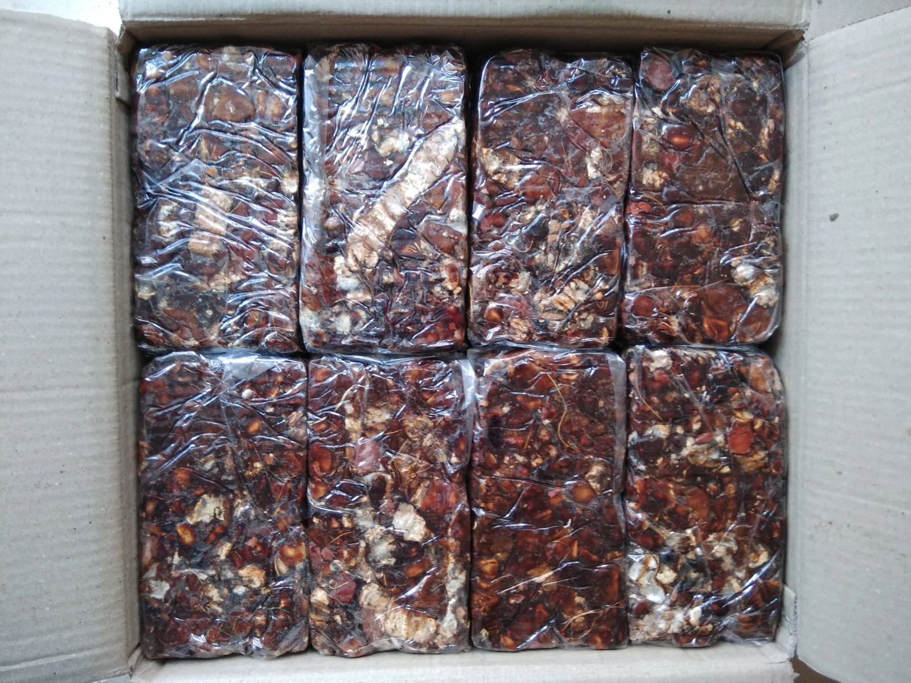

Indian Spices Exporter
17 spice products -- turmeric, chilli, cumin, coriander, pepper, cardamom and more -- each with its own HS code, specification and packing reference.
What JFT Agro Supplies
JFT Agro Overseas exports 17 Indian spice products: turmeric finger and powder, dry ginger and powder, fennel, fenugreek, coriander seeds, cumin seeds, dry red chilli, tamarind, ajwain, bay leaf, whole nutmeg and powder, black pepper and powder, curry powder, celery seeds and powder, dill seeds and powder, mustard seeds and powder, and green cardamom. Spice buyers typically source by specific commodity and grade (e.g. a curcumin-content threshold for turmeric, or a Scoville/colour grade for chilli), which is why each spice is its own product page with its own specification.
Spices Products


.webp)

.webp)




Specification & Selection Considerations
Spice specifications vary by product: turmeric is graded on curcumin content, chilli on heat (Scoville units) and colour (ASTA), and most spices carry moisture, purity, foreign-matter and admixture limits. HS codes differ by spice (17 distinct HS codes across this catalogue), which matters for customs classification and duty calculation at the destination.
This spice catalogue's most frequently documented markets are the USA, UK, UAE, Europe, Japan and Saudi Arabia.
Related Buyer Guides
Verify Before You Contract
Review our certifications, processing infrastructure and export documentation centre before confirming an order. Independent pre-shipment inspection can be arranged and is described in our quality control process.
Ready to Request Spices Pricing?
Share your destination port, quantity and packing requirement for a contract-based quote.